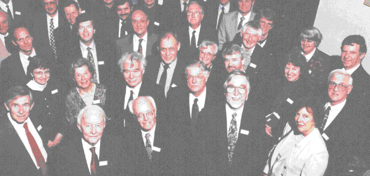

The meeting "50 years of Neutron Scattering" was held at The Cosener's House, Abingdon on Thursday 23rd April 1998, together with a dinner to mark the 80th birthday of George Bacon. The meeting was organised from the Department of Physics, University of Sheffield where George was Professor of Physics for 18 years and also acted as Dean of the Faculty of Pure Science. It was sponsored by the British Crystallographic Association, the Neutron Scattering Group of the Institute of Physics and of the Royal Society of Chemistry and was supported by CLRC ISIS Facility, I.L.L. Grenoble and the Oxford University Press, who mounted an exhibition of books.
George built the first neutron diffractometer in the U.K. at the Atomic Energy Research Establishment (A.E.R.E.) Harwell (where he worked for 17 years) and used it in the first neutron diffraction experiments to be performed outside the United States. He publicised the use of neutron scattering through his papers, his review articles and above all his textbooks. His classic "Neutron Diffraction" (Oxford University Press) ran into three editions and was essential introductory reading for many of today's leading neutron scatterers. It can be argued that without George's pioneering work, the strong U.K. neutron scattering community would not exist in its present form today.
The meeting which attracted 75 participants, was opened by its principal
organiser Neil Cowlam (Sheffield), who had made efforts to
trace former colleagues of George from both A.E.R.E., and his former Ph D
students from Sheffield. He explained that the meeting was intended to be a
mixture of both retrospective and modern contributions on neutron science
and that he hoped it would give old friends the opportunity to get together
again.
Mick Lomer (Harwell, ILL) looked back at the early days at
Harwell and coincidentally confirmed the widely held belief that the
policeman on the gate was more likely to know what was really going than
your group leader! Looking back he marvelled at the speed with which
equipment was built in those days; in October 1945 Cockcroft was asked to
find a site for A.E.R.E. by August 1947 the first reactor, GLEEP, was
operating in Harwell. Andrew Taylor (ISIS Facility) gave a
characteristically enthusiastic presentation in which he took the audience
forward beyond the year 2000 to a future European Spallation Source with a
neutron flux which would have been unthinkable at Harwell in the 1950's. Two
very modern contributions with a laptop PC and multimedia projector
followed. Bill David (ISIS Facility) took the theme of "50
years of neutron scattering" literally. He showed how the rise in data
collection rates closely imitated Moore's Law for the increase in computing
power. Examples of the analysis of neutron data were given from Bill's award
winning work on C60.
After the tea interval, Don Kearley (ILL) drove the PC for
his colleague Mark Johnson's presentation "Neutron and
numerical methods" which took examples from the materials studied by the
informal Numerical Methods Group at the ILL. They showed how a combination
of neutron diffraction, neutron spectroscopy and numerical modelling leads
to a deeper insight into the structures and dynamics of materials and
illustrated this with fascinating film sequences of moving and vibrating
atoms. The presentation concluded with an example of the study of hydrogen
bonding, which had incidentally been one of George Bacon's interests since
the very start of his neutron work. The scientific meeting closed with a
contribution "Liquid semiconductors, then and now" by John
Enderby (Bristol) who reminded the audience that the most fruitful
progress is often made when neutron data are combined with the results from
bulk (in this case electrical) measurements. A group photograph was taken,
merging imperceptibly into the sherry reception and the dinner.

The group photograph (ref: RAL 98RC2614) above was kindly provided by
Colin Carlile of the ISIS Facility; George is the second from the left on
the front row surrounded by his many friends. His children are at the left
hand end of the second and third rows. Others in the picture include Neil
Cowlam, Peter Egelstaff, John Enderby, Bruce Forsyth, Judith Howard,
Julia Higgins, Alan Leadbetter, Mick Lomer, Bill Mitchell, Nick Hance
and Andrew Taylor.
Alan Leadbetter (ILL) acted as Master of Ceremonies and drew attention to the 20 or so absent colleagues who had sent letters of congratulation and support. In an interesting and informative speech Bill Mitchell (Oxford, SERC) looked back over George's career. He highlighted his training in optics and in mineralogy as an undergraduate and drew attention to the galaxy of talent in crystallography which was present at Cambridge during George's time as a graduate student. He reminded the audience that George had always considered himself as much a crystallographer as a neutron scientist. Bill also explained how George's application to the SERC for financial support for personal access to neutron facilities, had directly stimulated the birth of the Neutron Beam Committee and the system of user access which continues to the present day. Finally George himself looked back at his early days at Harwell, comparing the pioneering scientific spirit of those times and the urgency to get things done, with the wider view that the Harwell site was the responsibility of the whole community working there. The extensive tree planting programme at Harwell, whose wonderful legacy we see today, was possibly one of the first expressions of environmental concern before the concept became quite so fashionable.
The dinner closed with a presentation of a bouquet of flowers to Jean Bacon for her mother, who was unable to be present through illness and a mounted photograph of George signed by all of those present.
Neil Cowlam
University of Sheffield
Page last updated 14 July 1998
 Click here to return to BCA homepage
Click here to return to BCA homepage